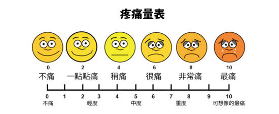

你好，欢迎来到《医学通识50讲》，我是薄世宁。
咱们以前讲过，要区分病和症。症状是病的信号，还是人体的自我保护。
疼痛就是一种最常见的症状。
60%以上的门诊病人，是因为疼痛就诊。30％以上的成人有慢性疼痛，而且随着年龄增长，这个比例还会逐年增加。
看来疼是一种普遍的问题。
很多人可能会认为，哪个地方疼，就一定能找到相关的病，等病好了，那么疼也就会消失了。
而且，在中国人的观念里，忍痛是一种英雄行为。
比如关公刮骨疗伤，就是英雄。
再比如女人生孩子就该疼，不疼怎么生孩子呢？
甚至连医生也会漠视疼痛。
在中国，无痛分娩率不到10%，在美国这一数字是85%，在英国是90%。
而且，中国吗啡类的镇痛药物用量不到美国的1/10。要知道，咱们的人口可是人家的4倍多。
所以，多数人对于疼是存在误解的。
那么疼真的只是一种症状吗？我们应该怎么对待疼？
这节课就来说说疼痛。
你永远不懂别人有多疼
疼这种感觉，到底有多疼呢？
2017年8月份，在陕西省，有个孕妇因为生孩子太疼了，多次向家人要求让自己剖宫产，而且医生也强烈建议赶紧手术。但是都被家属拒绝了。
家属认为，自己生最好，女人生孩子哪儿有不疼的？
最终，这个孕妇因为疼，跳楼了。这个病例就是疼痛带来的悲剧。
第二个病例和这个病例截然相反。
二战期间，美国军医毕阙（Henry K. Beecher）到前线抢救伤员。你肯定能想象到战场上那种惨烈。
有的伤员被刺刀挑破了肚子，有的被弹片打穿了胸腔，有的大腿骨折，有的大面积烧伤，有的甚至颅骨粉碎。
通常，医生在明确了损伤原因之后，会立刻给伤员注射吗啡。否则，人可能疼死。
但是，毕阙医生没想到的是，当他准备给这些伤员打针的时候，大部分的伤员都说：“大夫，我不疼，别给我打针。”
这就怪了。他们明明受伤非常严重，为什么他们反映出来的疼，却和咱们认为的疼，相差这么远呢？
因为，不同的人在不同环境下，疼痛体验是不同的。
尽管受到伤是客观的，但是疼痛却不客观，疼痛的程度是主观感受。
女人生孩子还不是最疼的。研究认为，让人类最疼的病有三种：带状疱疹引起的神经痛、癌症带来的疼痛和三叉神经痛。
疼痛跟体温、血压、脉搏都不一样，疼痛没有一种客观的测量手段。
那怎么判断别人有多疼呢？
据说，墨西哥的惠乔尔人在女人生娃的时候，产妇手里会抓一根绳，绳子的另一头绑在丈夫睾丸上。
每疼一次，产妇就用力拽这根绳一次。这样，丈夫就能判断妻子有多疼了，同时还能做到共情。
但是，用这种方法表达疼痛，既不科学，也不安全。
那么，医生怎么判断病人有多疼呢？
医学上有个疼痛标尺，用0-10分表示疼痛的级别。
最左侧代表一点都不疼，最右侧代表无法忍受的疼。让病人自己选择，到底属于哪个程度。

这种方法也只是相对准确。医院有句话：病人说疼就是疼，病人说有多疼，就有多疼。
所以，以后别人再说疼的时候，你可千万别说“真矫情，有那么疼吗？”
因为，你永远不知道别人有多疼。
疼痛有明确的神经传导通路
既然疼痛是一种主观体验，那么疼痛有客观基础吗？
有。
研究表明，痛觉的产生有明确的神经传导通路。
首先，各种损伤会刺激人体组织，释放致痛物质，也就是导致疼痛的化学物质。
接下来，这种化学物质会转化为生物电信号，然后由神经通过脊髓传给大脑。
大脑经过快速、复杂的分析和整合，最终形成疼痛的感觉。
所以，这个通路上的任何一个点出问题，痛觉都会受影响。
比如，经常会有糖尿病病人因为暖水袋烫伤。就是因为糖尿病损害了病人的末梢神经，所以，这条通路也就受到了影响。
痛觉降低了，感受不到疼，也就不知道躲，就这么生生地被烫伤了。
再比如，前面咱们说到了二战的伤员受到严重创伤，却不疼。
这又是为什么？
这是极端场景下才有的极端情况。
战争会让士兵高度紧张，人体就会分泌大量的激素，激素会作用于大脑分析和整合的环节，抑制痛觉。
另外在战场上，“我疼，故我在”。
能感觉到疼，说明人还活着。伤员即使受伤也有喜悦，这种快乐物质，同样也会抑制痛觉。
慢性疼痛是病
疼痛是症状，这点你肯定知道。哪儿疼就是给咱们提醒，对咱们还是一种保护，让咱们躲避损伤。
如果没有痛觉，是一件很可怕的事。
医学上有一种罕见病——先天性无痛症。这些人生下来就不知道疼是什么感觉。也就不知道躲。
有病例报道，在美国的明尼苏达州有个孩子，她长牙以后，和别的小孩一样喜欢啃手指。但是，如果没有人阻止的话，她会把自己的手啃得血肉模糊，甚至露出骨头。
后来到医院检查发现，她得的就是罕见的先天性无痛症。
所以，有痛觉该是件幸福的事。但是，疼久了就不一样。
尼采说过：疾病损害人的机体，疼痛摧毁人的灵魂。
在我看来，疼痛不仅能摧毁人的灵魂，疼久了，也会对身体带来巨大的伤害。
我们把持续时间大于三个月的疼痛，称为慢性疼痛。
急性疼痛通常容易找到原发病。但是很多慢性痛，找不到病因。慢性疼痛本身就是一种病。
首先，持续的疼痛会影响病人的生存质量。
身体的多个系统，比如神经系统、消化系统，内分泌系统、循环系统、免疫系统都会相继出现功能紊乱。
其次，持续的疼痛还会严重影响病人的心理。
病人会出现自卑、绝望、焦虑、抑郁等不良的情绪反应。尤其是癌症引起的疼痛，很多病人还会出现自杀甚至危害社会的行为。
疼久了，还会促进神经系统发生病理性重构。
也就是说，痛觉通路异常了，疼痛的感觉乱了。没刺激，也会疼。
举个例子。
有些长期腿疼的病人，神经通路就会发生病理性重构。截肢以后，病人仍然会感觉到腿疼。我们把这种现象称为幻肢痛，也就是幻想出来的疼。
世界卫生组织认为，疼痛是除了血压、呼吸、脉搏、体温之外的第五大生命体征，就是为了唤起全世界对于疼痛的关注。
既然慢性疼痛是病，就必须治疗。
治疗疼痛，也不仅是你认为的对症治疗。疼痛控制得好可以延长病人生命，改善生存质量。
忍痛的所谓美德，非常不科学，更不人道。
疼痛，永远不需要忍受
怎么科学地对待疼痛呢？我给你两条建议：
第一个建议是，改变观念。
很多人有个错误的观念，认为有了病，就应该痛。
所谓“病痛”，从古至今，中国人就是把病和痛联系在一起的。尤其是癌症。
我会诊过一个肝癌晚期，已经全身转移的病人。她说：“太疼了，生不如死，大夫我求求你，能不能让我赶紧死。”
这个时候，止疼就成了她最重要的治疗。
后来她用上了止疼药。先口服，之后又换上注射。最后她走的时候，是安详地离开的。
还有一种常见的错误观念，就是认为止疼药会上瘾，所以强忍疼痛。
其实，在疾病严重的时候，止疼药物上瘾的可能性极低。
美国国立卫生研究院指出，癌症病人吗啡药物上瘾的比例低于1％。
所以，世界卫生组织强调：对于医疗上需要使用吗啡的病人，应该满足需要。在这一点上，咱们远远没有达到世界水平。
第二个建议是，科学治疗疼痛。
当然，前提是必须首先确诊。在确诊之前，盲目用止疼药可能会掩盖病情。
一旦明确病情之后，所有的疼都不需要忍。免除疼痛是人类的基本权利。
国际疼痛学会（International Association for the Study of Pain）把每年的10月11日定为“全球征服疼痛日”。就是为了唤起全世界的人，对于止疼的重视。
免除疼痛不只一种人道主义的关怀，止疼更是一门专业的学科。
这个学科专门研究疼痛的病理生理机制，还有科学止疼的方法。他们用药物、手术，可以有效地去除绝大部分的疼痛。
下节预告
年龄大就是老了吗？下一讲，我们讲讲衰老的本质，以及科学延缓衰老的办法。